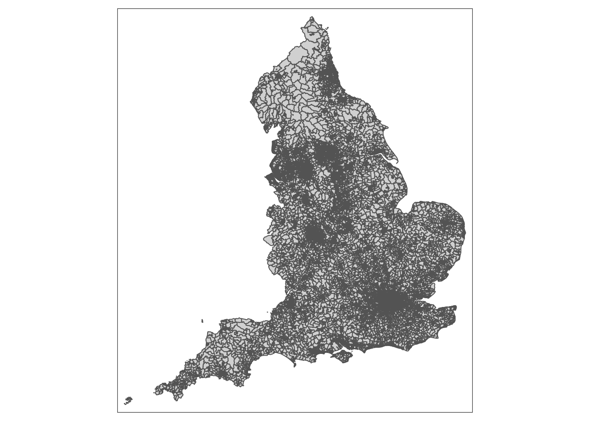
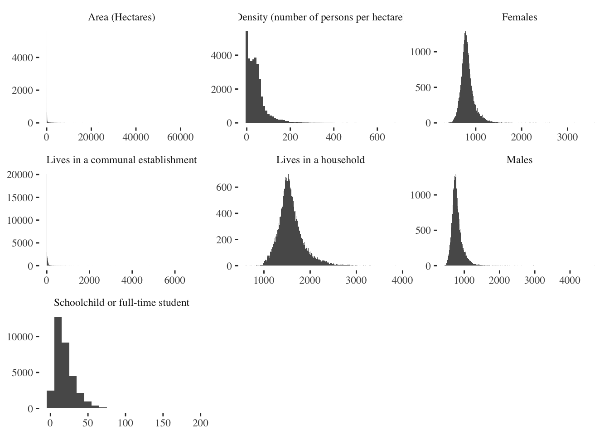
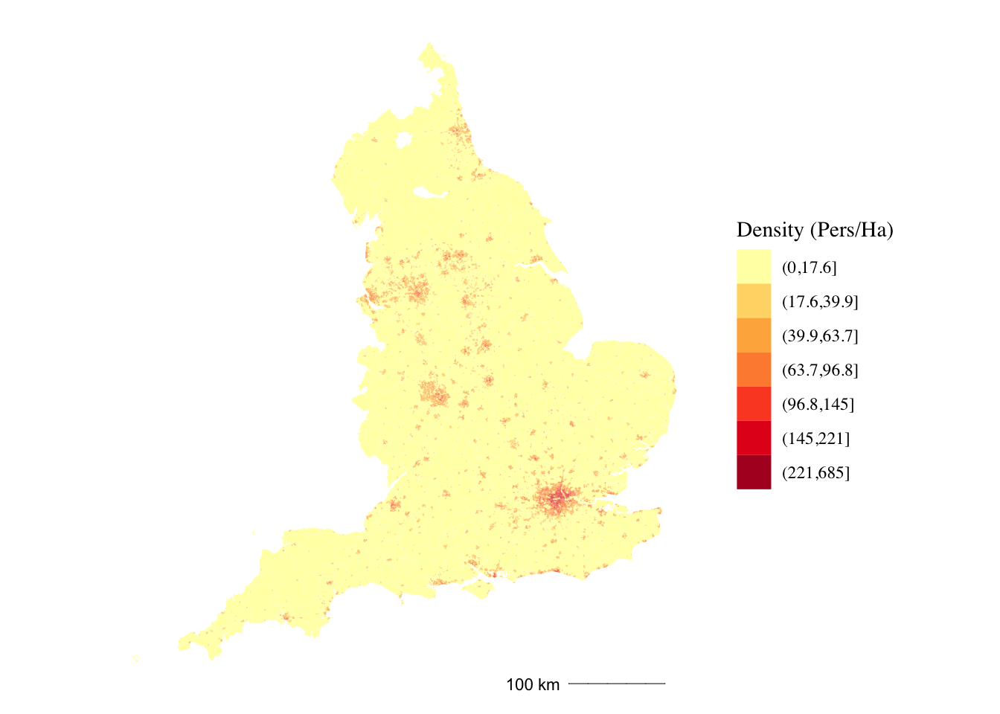
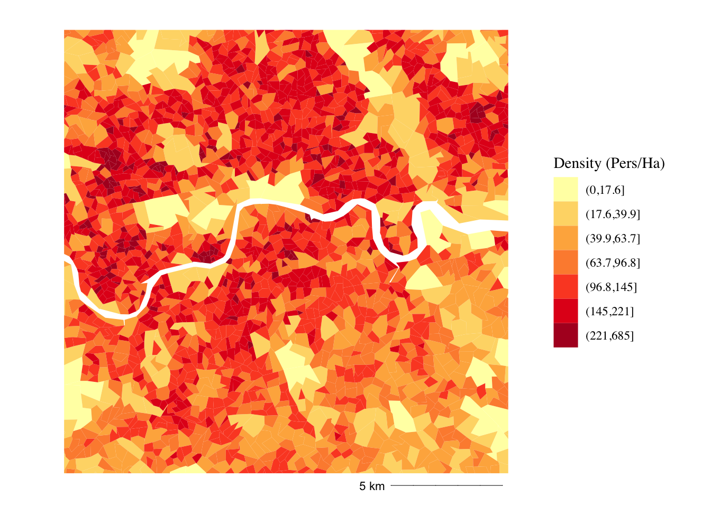
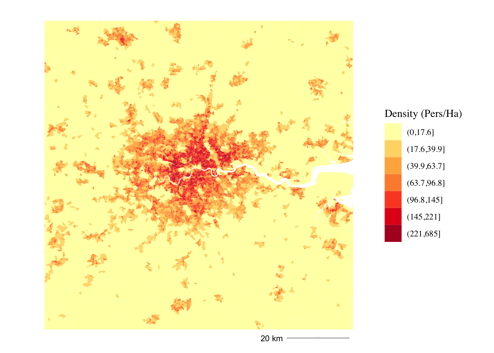
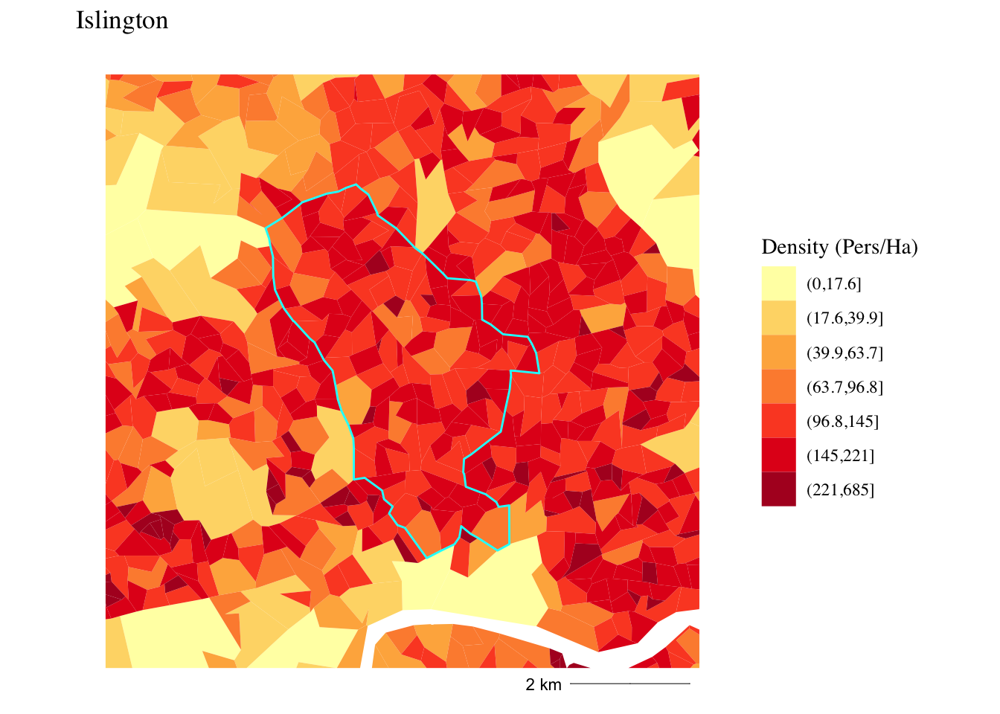
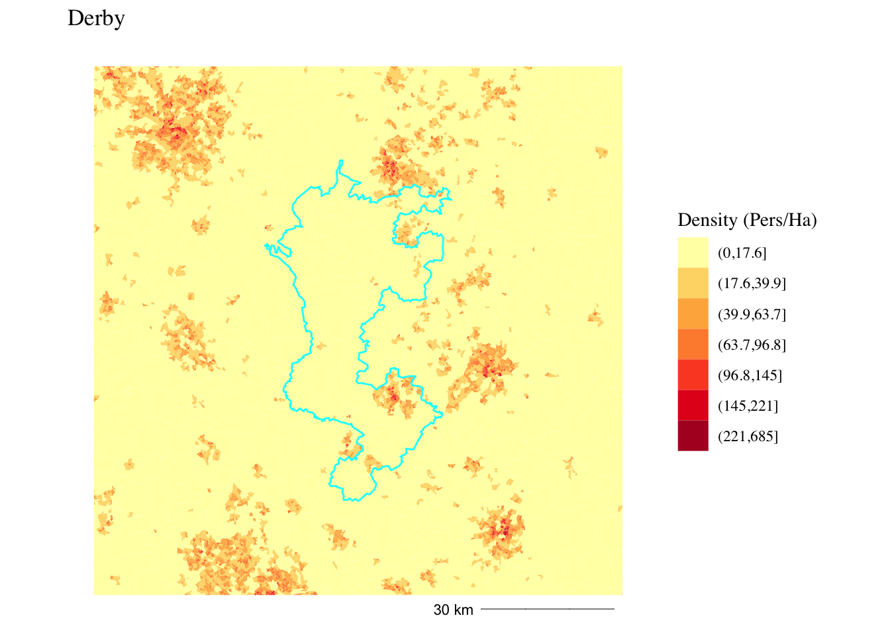

Get data from https://borders.ukdataservice.ac.uk/easy_download_data.html?data=England_lsoa_2011
English Lower Layer Super Output Areas, 2011, Clipped and Super-Generalised
# ref https://census.ukdataservice.ac.uk/use-data/guides/boundary-data.aspx
#create a couple temp files
temp <- tempfile()
temp2 <- tempfile()
#download the zip folder from the internet save to 'temp'
download.file("https://borders.ukdataservice.ac.uk/ukborders/easy_download/prebuilt/shape/England_lsoa_2011_sgen_clipped.zip",temp)
#unzip the contents in 'temp' and save unzipped content in 'temp2'
unzip(zipfile = temp, exdir = temp2)
#finds the filepath of the shapefile (.shp) file in the temp2 unzip folder
#the $ at the end of ".shp$" ensures you are not also finding files such as .shp.xml
your_SHP_file<-list.files(temp2, pattern = ".shp$",full.names=TRUE)
#read the shapefile. Alternatively make an assignment, such as f<-sf::read_sf(your_SHP_file)
lsoa <- st_read(your_SHP_file)## Reading layer `england_lsoa_2011_sgen_clipped' from data source `/private/var/folders/fk/75w_dp6n7z53153kffjhzsjr0000gn/T/RtmpMNIqI9/file2409761e78aa/england_lsoa_2011_sgen_clipped.shp' using driver `ESRI Shapefile'
## Simple feature collection with 32844 features and 2 fields
## geometry type: MULTIPOLYGON
## dimension: XY
## bbox: xmin: 82678 ymin: 5343 xmax: 655604.7 ymax: 657534.1
## CRS: 27700qtm(lsoa)
Get data from https://www.nomisweb.co.uk
KS101EW - Usual resident population (https://www.nomisweb.co.uk/datasets/144_1/about)
library(readr)
data <- read_csv("1400620050.csv",
skip = 8) # skips the first summary rows in CSV## Parsed with column specification:
## cols(
## `2011 super output area - lower layer` = col_character(),
## mnemonic = col_character(),
## `All usual residents` = col_double(),
## Males = col_double(),
## Females = col_double(),
## `Lives in a household` = col_double(),
## `Lives in a communal establishment` = col_double(),
## `Schoolchild or full-time student aged 4 and over at their non term-time address` = col_double(),
## `Area (Hectares)` = col_double(),
## `Density (number of persons per hectare)` = col_double()
## )## Warning: 4 parsing failures.
## row col expected actual file
## 34754 -- 10 columns 2 columns '1400620050.csv'
## 34755 -- 10 columns 2 columns '1400620050.csv'
## 34756 -- 10 columns 2 columns '1400620050.csv'
## 34757 -- 10 columns 2 columns '1400620050.csv'head(data)tail(data)# remove the last 4 rows
data <- data %>%
slice_head(n = nrow(.) - 4)pop <- lsoa %>%
merge(., data, by.x="code", by.y="mnemonic", no.dups = TRUE)glimpse(pop)## Rows: 32,844
## Columns: 12
## $ code <fct> …
## $ name <fct> …
## $ `2011 super output area - lower layer` <chr> …
## $ `All usual residents` <dbl> …
## $ Males <dbl> …
## $ Females <dbl> …
## $ `Lives in a household` <dbl> …
## $ `Lives in a communal establishment` <dbl> …
## $ `Schoolchild or full-time student aged 4 and over at their non term-time address` <dbl> …
## $ `Area (Hectares)` <dbl> …
## $ `Density (number of persons per hectare)` <dbl> …
## $ geometry <MULTIPOLYGON [m]> …# Rename large column name and gather over columns to create facet
popdf <- pop %>%
st_drop_geometry() %>%
rename(`Schoolchild or full-time student`=`Schoolchild or full-time student aged 4 and over at their non term-time address`) %>%
select(c(1,5:11)) %>%
gather(key, value, -code)popdf %>%
ggplot() +
geom_histogram(aes(x=value), binwidth = 10) +
facet_wrap(~key, scales = "free") +
theme_tufte() +
theme(axis.title = element_blank())
# create jenks breaks for Density
br7_jenks <- getJenksBreaks(pop$`Density (number of persons per hectare)`, 8)br7_jenks## [1] 0.0 17.6 39.9 63.7 96.8 144.8 221.4 684.7pop <- pop %>%
mutate(jenks = cut(`Density (number of persons per hectare)`, breaks = br7_jenks))pop %>%
#slice(1:4530) %>%
na.omit() %>%
ggplot(aes(fill=jenks)) +
geom_sf(size=0) +
theme_tufte() +
theme(axis.title = element_blank(),
axis.text = element_blank(),
axis.ticks = element_blank()) +
scale_fill_brewer(type = "seq", palette = "YlOrRd", name="Density (Pers/Ha)") +
annotation_scale(location = "br", style = "ticks", tick_height = 0, height = unit(0, "mm"), line_width = 0.5, pad_x = unit(7, "mm"), text_cex = 0.7)
b1 <- pop %>%
slice(1:4530) %>%
st_bbox() %>% # bounding box
st_as_sfc() %>% # geometry from bounding box
st_centroid() %>%
st_buffer(10000) %>% # buffered distance from centroid
st_bbox() %>%
st_as_sfc()pop %>%
#slice(1:4530) %>%
st_crop(., b1) %>%
na.omit() %>%
ggplot(aes(fill=jenks)) +
geom_sf(size=0) +
theme_tufte() +
theme(axis.title = element_blank(),
axis.text = element_blank(),
axis.ticks = element_blank()) +
scale_fill_brewer(type = "seq", palette = "YlOrRd", name="Density (Pers/Ha)") +
annotation_scale(location = "br", style = "ticks", tick_height = 0, height = unit(0, "mm"), line_width = 0.5, pad_x = unit(7, "mm"), text_cex = 0.7)## Warning: attribute variables are assumed to be spatially constant throughout all
## geometries
b2 <- pop %>%
slice(1:4530) %>%
st_bbox() %>% # bounding box
st_as_sfc() %>% # geometry from bounding box
st_centroid() %>%
st_buffer(50000) %>% # buffered distance from centroid
st_bbox() %>%
st_as_sfc()pop %>%
#slice(1:4530) %>%
st_crop(., b2) %>%
na.omit() %>%
ggplot(aes(fill=jenks)) +
geom_sf(size=0) +
theme_tufte() +
theme(axis.title = element_blank(),
axis.text = element_blank(),
axis.ticks = element_blank()) +
scale_fill_brewer(type = "seq", palette = "YlOrRd", name="Density (Pers/Ha)") +
annotation_scale(location = "br", style = "ticks", tick_height = 0, height = unit(0, "mm"), line_width = 0.5, pad_x = unit(7, "mm"), text_cex = 0.7)## Warning: attribute variables are assumed to be spatially constant throughout all
## geometries
# filter by string
# create buffer Islington
bIsl <- pop %>%
filter(str_detect(name, "Islin")) %>%
st_bbox() %>% # bounding box
st_as_sfc() %>% # geometry from bounding box
st_centroid() %>%
st_buffer(5000) %>% # buffered distance from centroid
st_bbox() %>%
st_as_sfc()# create boundary Islington
bou_Isl <- pop %>%
filter(str_detect(name, "Islin")) %>%
st_union() pop %>%
#slice(1:4530) %>%
st_crop(., bIsl) %>%
na.omit() %>%
ggplot() +
geom_sf(aes(fill=jenks), size=0) +
geom_sf(data=bou_Isl, colour="cyan", fill=NA) +
theme_tufte() +
theme(axis.title = element_blank(),
axis.text = element_blank(),
axis.ticks = element_blank()) +
scale_fill_brewer(type = "seq", palette = "YlOrRd", name="Density (Pers/Ha)") +
annotation_scale(location = "br", style = "ticks", tick_height = 0, height = unit(0, "mm"), line_width = 0.5, pad_x = unit(7, "mm"), text_cex = 0.7) +
labs(title="Islington")## Warning: attribute variables are assumed to be spatially constant throughout all
## geometries
# filter by string
# create buffer Derby
bDer <- pop %>%
filter(str_detect(name, "Derb")) %>%
st_bbox() %>% # bounding box
st_as_sfc() %>% # geometry from bounding box
st_centroid() %>%
st_buffer(60000) %>% # buffered distance from centroid
st_bbox() %>%
st_as_sfc()# create boundary Derby
bou_Der <- pop %>%
filter(str_detect(name, "Derb")) %>%
st_union() pop %>%
#slice(1:4530) %>%
st_crop(., bDer) %>%
na.omit() %>%
ggplot() +
geom_sf(aes(fill=jenks), size=0) +
geom_sf(data=bou_Der, colour="cyan", fill=NA) +
theme_tufte() +
theme(axis.title = element_blank(),
axis.text = element_blank(),
axis.ticks = element_blank()) +
scale_fill_brewer(type = "seq", palette = "YlOrRd", name="Density (Pers/Ha)") +
annotation_scale(location = "br", style = "ticks", tick_height = 0, height = unit(0, "mm"), line_width = 0.5, pad_x = unit(7, "mm"), text_cex = 0.7) +
labs(title="Derby")## Warning: attribute variables are assumed to be spatially constant throughout all
## geometries